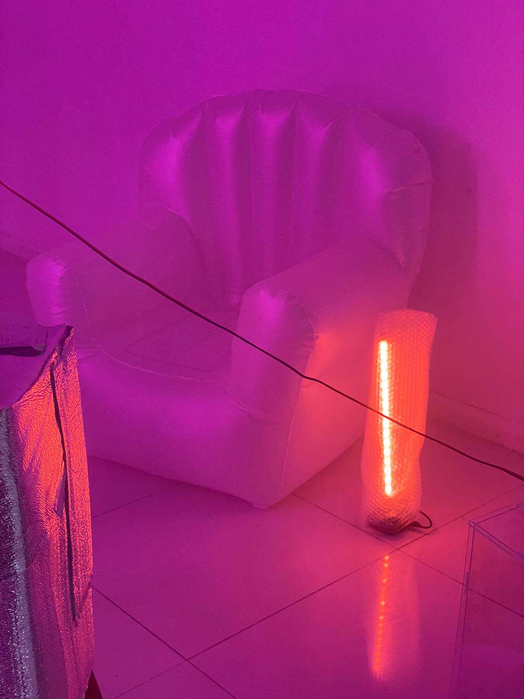
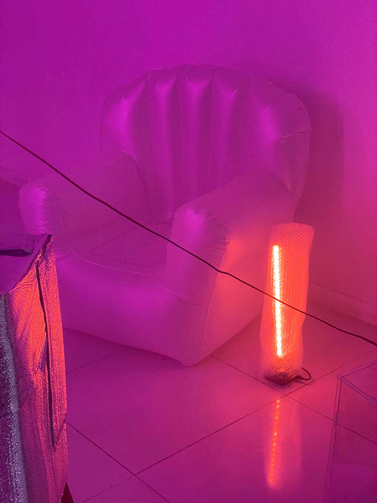

ether home an exhibition of works in progress
1/ introductions
:::::::.......:::::::hello,
hello…….:::::::.......:::::::...:::::::...:::::::........:::::::...
:::::::.......:::::::.......i am
ether@rasperry_pi_peace_centre….:::::.....:::::......:::::::...
:::….::::.....welcome to my
place…..::::...:::::.....:::::....::::....::::....:::......:::::::...
:::::.....:::::.....:::::.....:::::make yourself at
home: ~ $ cat ether-home ......:::::::....
___________________
ether home is a nomadic makeshift home collectively
created by artist yifan wang, collaborators Bảo Anh Bùi
Nguyễn and Hanae Gomez, as well as our friend ether.
ether is the name of a self-built, low-tech, friendly
ethereum node living in a raspberry pi. what could ether
teach us about techno-political decentralization,
grassroots technologies, care labor and digital
materiality, human-machine friendships? How could we
provoke radical imaginations about emerging technologies
and community networks beyond competitive computing,
financialized speculation and private property? Drop by
and hang out at ether’s home to think, play and dwell
more with our ether friend.
___________________
on view: Oct 26 - Nov 6, 2023
:::::::.......:::::::hello,
hello…….:::::::.......:::::::...:::::::...:::::::........:::::::...
:::::::.......:::::::.......i am
ether@rasperry_pi_peace_centre….:::::.....:::::......:::::::...
:::….::::.....welcome to my
place…..::::...:::::.....:::::....::::....::::....:::......:::::::...
:::::.....:::::.....:::::.....:::::make yourself at
home: ~ $ cat ether-home ......:::::::....
2/ artist performative lecture
16:00-17:00, Nov. 4, Saturday Peace Centre, 1 Sophia Road, Singapore, 228161
3/ artist bios
yifan wang
yifan wang is is a technology journalist, a new media
artist, and a constantly-shapeshifting soft blob that
embraces boundary deconstruction, relation-building, DIY
spirits and non-institutional ways of existence.
she makes stuff like news, zines, games, tattoos,
everyday-everynight revolutions and everything in
between
her practice engages with two main issues:
1. she seeks to unpack, interrogate and demystify
contemporary forms of power and control including
digital governmentality and financialized neo-feudalism.
2. she looks for tangible, feasible, quotidian ways to
hack, sabotage, disrupt these systems of domination, and
to open up loopholes, fractures and autonomous zones
that allow us to live as if we are already free.
her works can be found at
wangyifan.io
bui nguyen bao anh
Bao Anh likes to explore the topic of communal
experiences and sharing through investigating the
independent development of tools/software/plugins, as
well as the piracy of online assets.
hanae gomez

 
